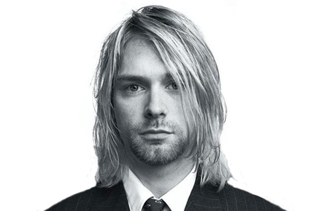

Kurt Donald Cobain an American musician, artist, songwriter, guitarist and poet. Born in Aberdeen, Washington, Cobain formed the band Nirvana with Krist Novoselic in 1987 and established it as part of the Seattle music scene and grunge genre. Nirvana's debut album Bleach was released on the independent record label Sub Pop in 1989.
After signing with major label DGC Records, the band found breakthrough success with "Smells Like Teen Spirit" from their second album Nevermind (1991). Following the success of Nevermind, Nirvana was labeled "the flagship band" of Generation X, and Cobain hailed as "the spokesman of a generation". Cobain, however, was often uncomfortable and frustrated with that label, believing his message and artistic vision to have been misinterpreted by the public, with his personal issues often subject to media attention.
During the last years of his life, Cobain struggled with heroin addiction, chronic health problems and depression. He also had difficulty coping with his fame and public image, and the professional and personal pressures surrounding himself and his wife, musician Courtney Love. On April 8, 1994, Cobain was found dead at his home in Seattle, the victim of what was officially ruled a suicide by a self-inflicted shotgun wound to the head. The circumstances of his death at age 27 have become a topic of public fascination and debate. Since their debut, Nirvana, with Cobain as a songwriter, has sold over 25 million albums in the U.S., and over 75 million worldwide. Cobain was posthumously inducted into the Rock and Roll Hall of Fame in 2014, along with Nirvana bandmates Krist Novoselic and Dave Grohl, in their first year of eligibility.
Read More